Objectives
We start a new application in this lab, which will be succeeded by numerous version over the next few topics. In the first lab the focus is on explaining the essential 'plumbing' of the app, and introducing the first Interface based listener you may have encountered.
Create Project
Click on Start a new Android Studio project on the Quick Start panel in the Welcome screen.
- Complete the wizard steps as shown in the following screenshots:
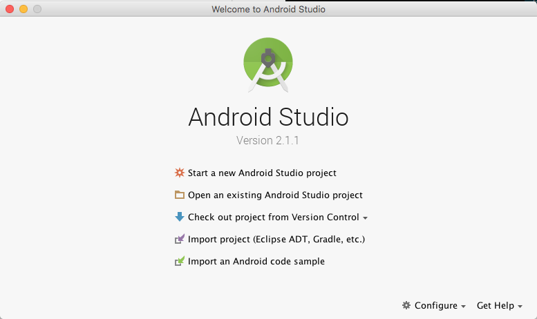
- Carefully note the Project location you choose. We suggest you name the project folder myrent-android-2015.
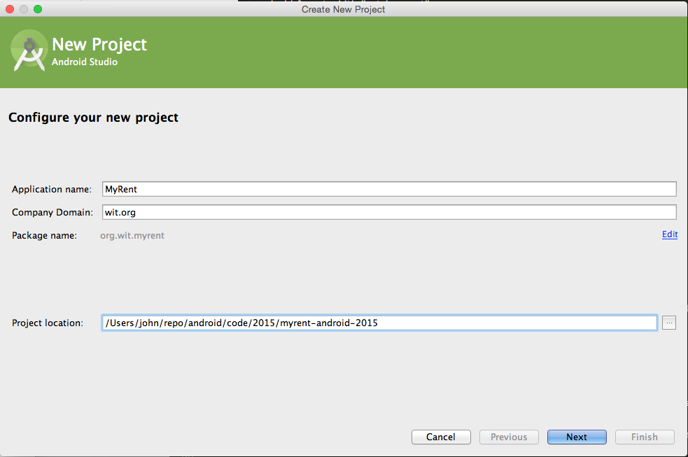
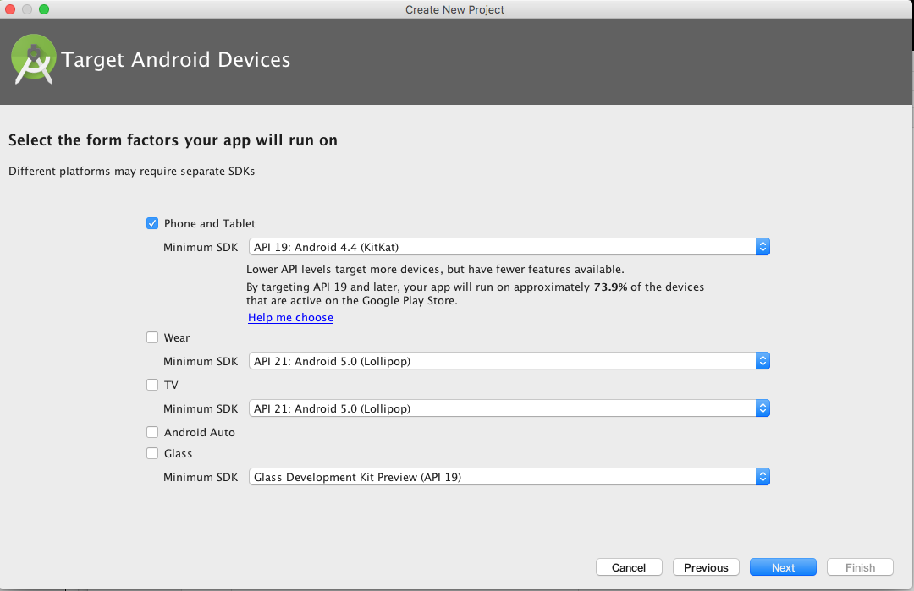
 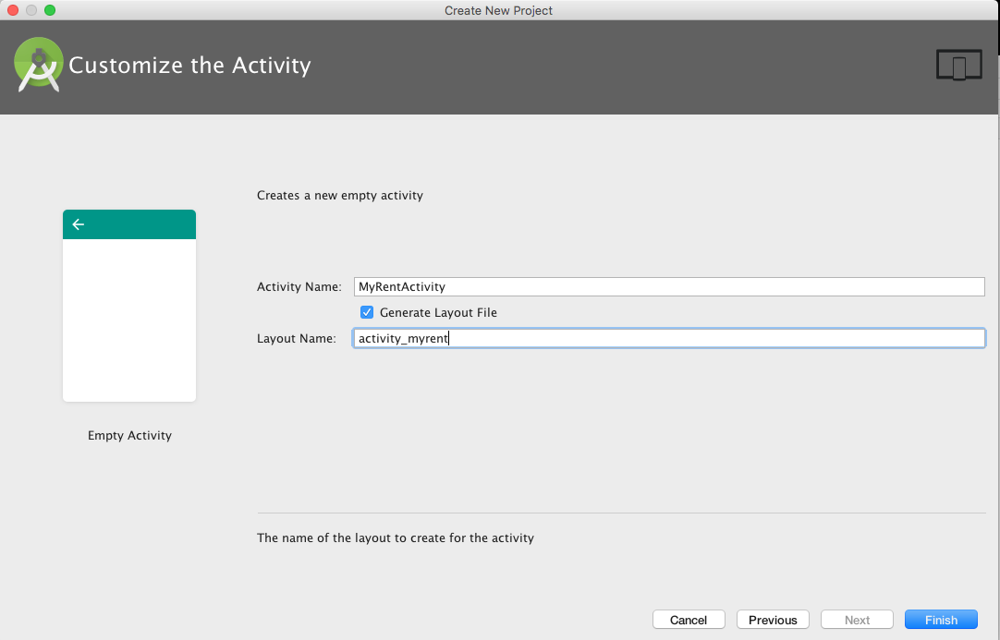
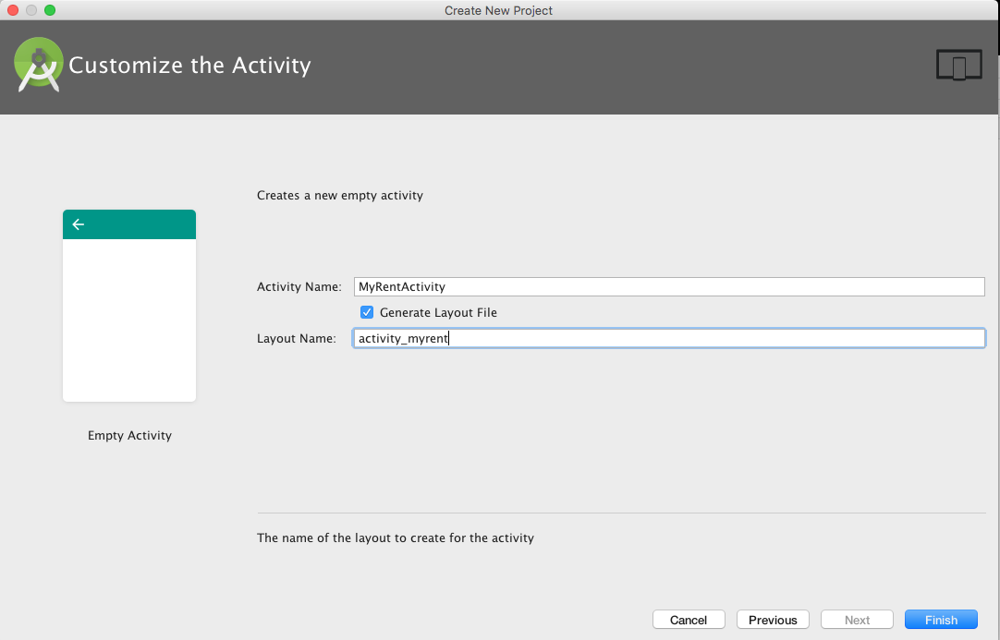
Replace build.gradle (Module:app) with the following version. Two build.gradle files exist: ensure you refactor the one specified here.
apply plugin: 'com.android.application'
android {
compileSdkVersion 23
buildToolsVersion "23.0.3"
defaultConfig {
applicationId "org.wit.myrent"
minSdkVersion 19
targetSdkVersion 23
versionCode 1
versionName "1.0"
}
buildTypes {
release {
minifyEnabled false
proguardFiles getDefaultProguardFile('proguard-android.txt'), 'proguard-rules.pro'
}
}
}
dependencies {
compile fileTree(dir: 'libs', include: ['*.jar'])
testCompile 'junit:junit:4.12'
compile 'com.android.support:appcompat-v7:23.4.0'
}It is necessary to sync the project when build.gradle is changed: 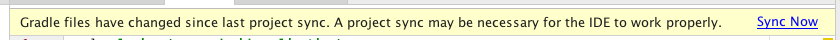
The default layout should now be as shown in Figure 6.


- Now in bash terminal cd to project folder, myrent-android-2015.
- Run git init to create an empty repo.
- In Sublime Text or other suitable text editor create a
.gitignorefile with the following content:
#built application files
*.apk
*.ap_
# files for the dex VM
*.dex
# Java class files
*.class
# generated files
bin/
gen/
# Local configuration file (sdk path, etc)
local.properties
# Windows thumbnail db
Thumbs.db
# OSX files
.DS_Store
# Android Studio
# https://www.jetbrains.com/idea/help/project.html
*.iml
.idea
.gradle
build/Add the code generated so far and make a first commit with a message such as:
- Baseline built using Android Studio 2.1.1 & Android 6.0 (API 23)
Before committing check that git is properly configured with your name and email:
git config --global -l
git config --global user.name <your name>
git config --global user.email <your email>git add .
git commit -m 'MyRent-00 (step 01): Baseline app built using Android Studio 1.3.2'Create a tracking repository on your Bitbucket account. Follow the Bitbucket instructions to associate your local repo with the remote repo and on making the initial push from local to remote.
- Progressively add and commit to the repo as you complete this and subsequent labs.
- We suggest you tag each lab's code v0, v1, v2 ..., each tag corresponding to a lab.
- Additionally, you may find it helpful to commit each step of each lab with a suitable message as exemplified in Figure 8 and relating to the Donation app encountered earlier in the course.

Install and launch the app on a device or emulator. Figure 9 is a screenshot of the app installed on the Android emulator.

For reference, the sdk configuration shown in Figure 10 is that on which this lab is based. The latest Build-tools (23) and SDK Platform (API 23) are installed. Your platform configuration may vary from this. You may inspect your configuration by launching the SDK Manager as demonstrated in Figure 11.
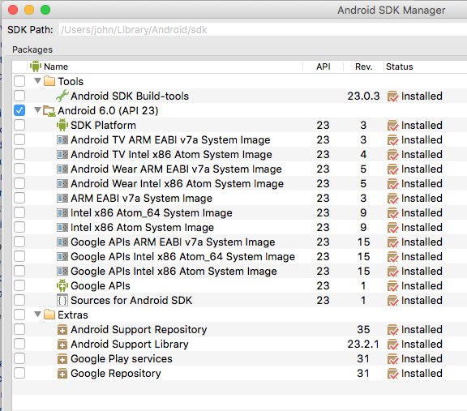
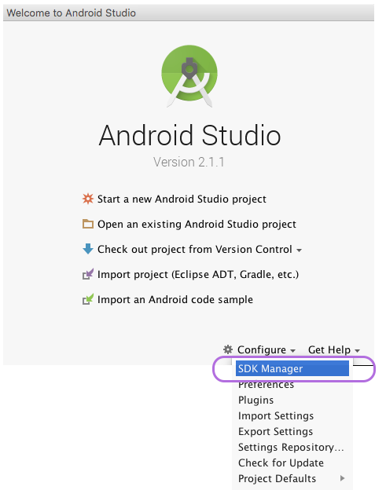
Figure 12 shows the lab module's build.gradle. Observe that the minSdkVersion is 16. The goal is that MyRent may be installed and run on phones from and including Jelly Bean version. Study the table here to get an appreciation of the relationship between platform version (example Android 4.1) and API level (example JELLY_BEAN).
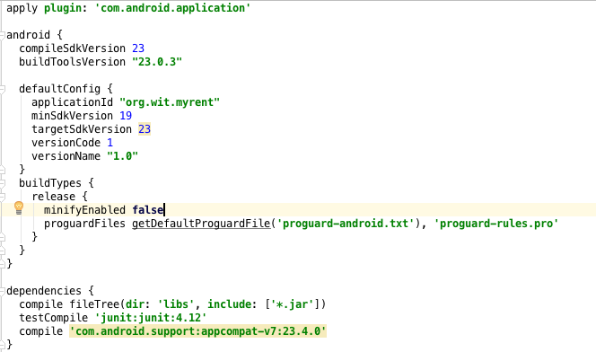
Layout XML
Some of the key files of the application are identified in the screenshot of the Project Files Tools Window as illustrated in Figure 1.
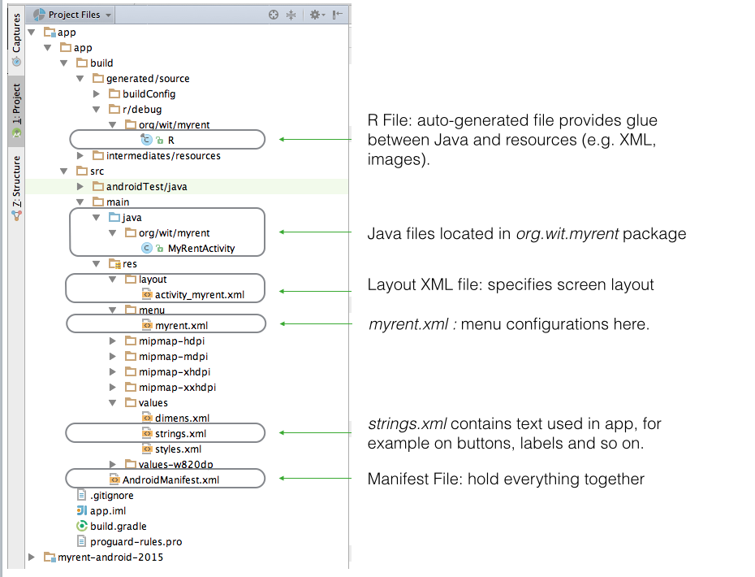
Layout XML Code
The file activity_myrent.xml specifies the screen layout. The textual content of the file is as follows.
<RelativeLayout xmlns:android="http://schemas.android.com/apk/res/android"
xmlns:tools="http://schemas.android.com/tools"
android:layout_width="match_parent"
android:layout_height="match_parent"
android:paddingLeft="@dimen/activity_horizontal_margin"
android:paddingRight="@dimen/activity_horizontal_margin"
android:paddingTop="@dimen/activity_vertical_margin"
android:paddingBottom="@dimen/activity_vertical_margin"
tools:context=".MyRent">
<TextView
android:text="@string/hello_world"
android:layout_width="wrap_content"
android:layout_height="wrap_content" />
</RelativeLayout>This translates to the graphical layout shown in Figure 2.

Tabs enable one to quickly switch between graphical and textual content as demonstrated in Figure 3. 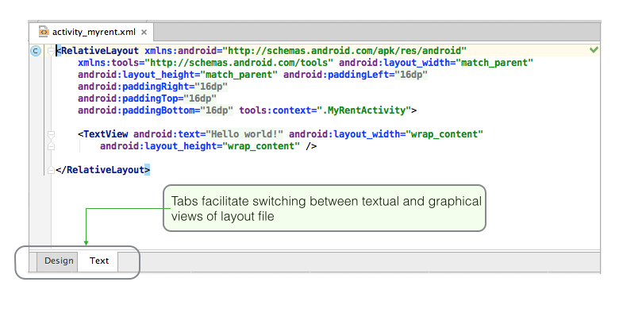
From the XML above you can see that the layout comprises a TextView wrapped in a Relative Layout.
A Relative Layout is a parent container for views, referred to as child views, that are arranged in relative positions to each other. In this app, to date, there is only one child view - a TextView.
A TextView displays text and is configured by default to be read-only.
Both the RelativeLayout and TextView definitions contain attributes that determine characteristices such as, for example, their size and position.
Thus, in the case of TextView, the attribute android:layout_width, whose value is wrap_content, determines that the view will be created just wide enough to contain the text specified by the attribute android:text (whose value is @string/hello_world).
This becomes clear if you select Hello world in the graphical representation of activity_myrent.xml as demonstrated in Figure 4.

Were the TextView attribute android:layout_width set to fill_parent the situation would be as represented in Figure 5. 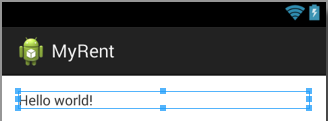
A short tutorial is available is available here that demonstrates the effect of different values for layout_width and layout_height attributes.
An interesting feature of Android Studio may be observed here. Figure 6 below contains a screen shot of of activity_myrent.xml. At first glance the string Hello world seems to be hardwired. However if you hover over the string (as was done in preparing the screenshot) you will notice the underlying reference to @string/hello_world in the res/values/strings.xml file. This approach differs from that in Eclipse where @string/hello_world is displayed in the xml file.
You may disable this feature by accessing Preferences | Editor | Code Folding and unticking Android String References.
It's also interesting to note that if you copy the textual content of activity_myrent.xml from Android Studio and paste it to a text editor, @string/hello_world is displayed, not Hello world.
Hover over other attributes in the layout file, such as padding, to observe somewhat similar effects.
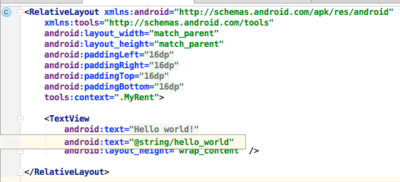
Strings
The file strings.xml, located in res/values, contains all the text that MyRent application uses.

This arrangement, rather than hard-coding strings when and where required in the code, greatly facilites any changes to the strings, such as for example in localization - adapting your application to a new language.
Presently strings.xml contains only 3 entries (see Figure 2):
- The application name: MyRent
- The content displayed on running the app: Hello world!
- An Options Menu item - Settings - on the Action bar (Figure 3).
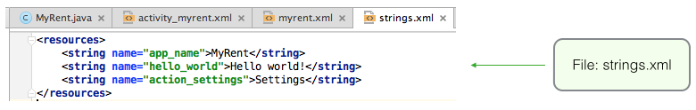
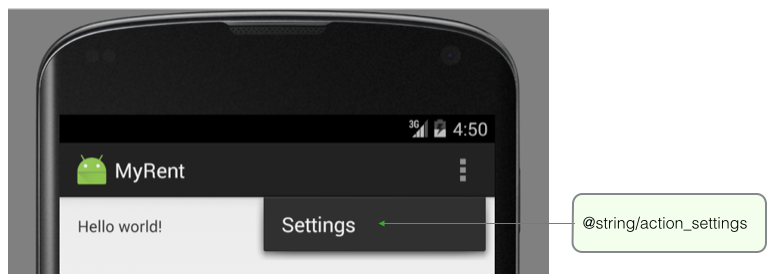
The name of the application may be obtained theoughout the application by accessing a string element thus:
"@string/app_name"
This is illustrated in Figure 4 below where the application's name is retrieved in AndroidManifest.xml.
Figure 5 shows how the Hello world! string, displayed when the application is launched, is obtained.
Figure 6 shows how an entry in the Action bar (Settings) is obtained.
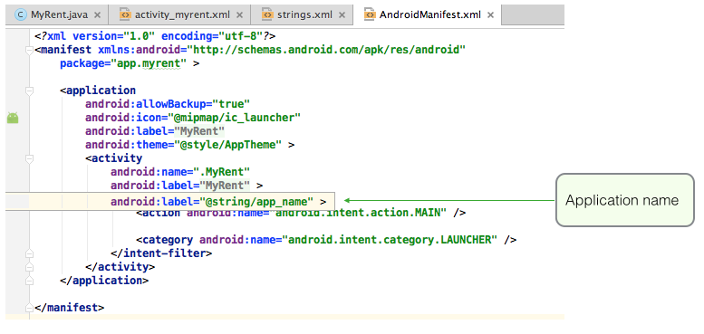 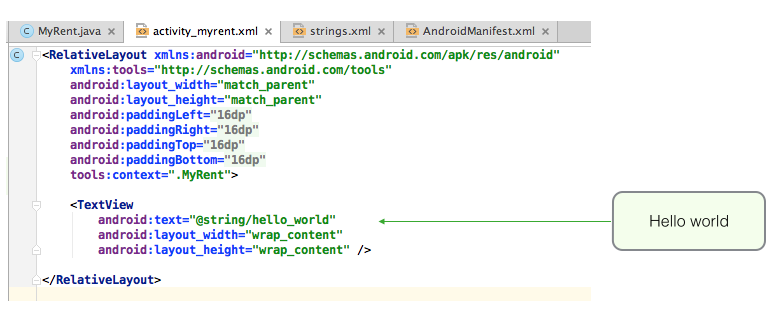 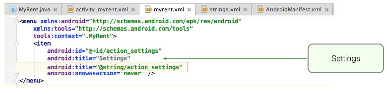
R File
All auto-generated files are located in the build folder structure and should not be modified by the developer.
- BuildConfig.java contains a constant that allows one to run some code only in debug mode.

- The R file (R.java) is the glue between Java and resources, for example XML files, images and so on.
- The file is automatically regenerated whenever a change is made to any of the content in the res directory.
- For example, when an image is added, or when an XML file added or modified.
- The file is automatically regenerated whenever a change is made to any of the content in the res directory.

Java
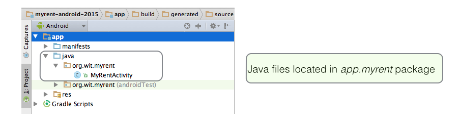
MyRentActivity
- This is a subclass of the Android class Activity
- An Activity creates (or inflates) a window within which are located UI components such as buttons, text and so on.
onCreate
- This method initializes the activity.
- Note the argument to setContentView: R.layout.activity_myrent.
- This is an integer constant that is autogenerated, the ID of the resource to be inflated, namely the MyRent layout.
- A resource is some item of the application that is not code, such as for example an images, XML file, audio file and so on.
onCreateOptions
- This method inflates the menu and adds any items present to the Action bar.
- In the case of MyRent this is shown in Figure 3 below.
onOptionsItemSelected
- When an item on the action bar is clicked the program's execution path routes through this method.
- Figure 3 below shows the situation where
- MyRent is run in debug mode,
- The Settings menu item has been clicked
- The program halts at a breakpoint in onOptionsItemSelected


Run App
This step only applies to those intending to use the Genymotion emulator.
Start the Genymotion emulator
- Press the Genymotion icon on the tool bar
- The Genymotion Virtual Device Manager opens
- Select an available device
- For example Google Nexus 7
- Note that, as previously mentioned, the particular device required to display Google Maps is
- Google Nexus 4 - 4.3 - API - 768x1280
- Press the Start button on the right of the Device Manager window 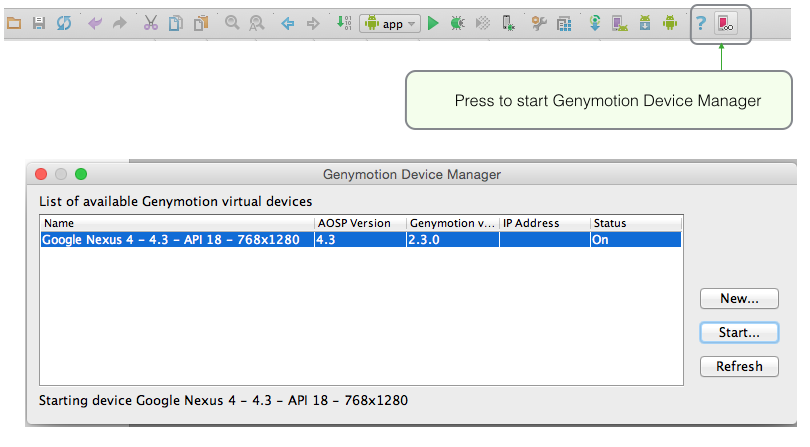
- After a brief pause the emulator will launch (Figure 2)
- Unlock by dragging lock icon to the margin.

- Unlock by dragging lock icon to the margin.
If the emulator fails to launch on pressing the toolbar icon, launch it from the Start menu (Windows) or the Applications folder (Mac).
Run the app
Select myrent-android project in the Android Studio Package Explorer
- From the menu, execute the command
- Run As | Android Application (Figure 3)
- The Android Device Chooser window opens.
- Press the radio button Choose a running Android device and select device (for example genymotion-google-nexus as shown in Figure 4).
- Optionally, tick the box: Use same device for future launches
- Press OK
- The application should open in the emulator as depicted in Figure 5
- Reminder: unless the emulator is unlocked (by dragging the lock icon to the right margin) the application window may not appear.
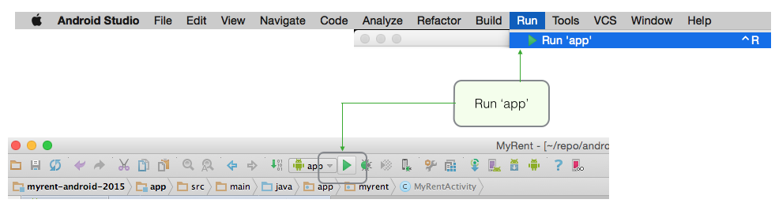
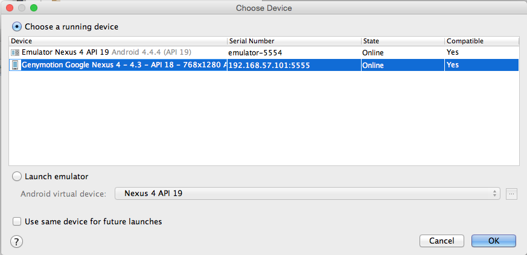

Model
We first begin with a new model class: Residence.
- Create the file in the package org.wit.myrent.
- It contains three fields:
- Long id, a pseudo-random long integer.
- String geolocation, a field representing latitude and longitude, the geolocation of a particular residence.
- Setter and getter methods for geolocation are also provided.
Residence.java
package org.wit.myrent;
import java.util.Random;
public class Residence
{
private Long id;
//a latitude longitude pair
//example "52.4566,-6.5444"
private String geolocation;
public Residence()
{
id = unsignedLong();
}
/**
* Generate a long greater than zero
* @return Unsigned Long value greater than zero
*/
private Long unsignedLong() {
long rndVal = 0;
do {
rndVal = new Random().nextLong();
} while (rndVal <= 0);
return rndVal;
}
public void setGeolocation(String geolocation)
{
this.geolocation = geolocation;
}
public String getGeolocation()
{
return geolocation;
}
}Layout
A general note on layout development: Android Development Kit (ADK) provides two ways to to create a user interface (UI):
Declarative
- Use XML to define how the UI will look
- Developing the UI declaratively has the advantage of providing immediate visual feedback.
Programmatic
- Write all necessary code in Java.
In this series of labs we shall develop the UI in XML but use Java to, where necessary, interact with UI components. For example when data is entered in a UI control (for example a text input component), then the ensuing operations will be handled programmatically using Java.
Back to the present iteration: We have completed the refactoring of the Java code.
Here we shall address the necessary changes to the layout.
First, we need to make a change to the file res/values/strings.xml.
The legacy code from the baseline MyRent app is as shown here in Figure 1:

Replace this with the following:
Filename: strings.xml
<resources>
<string name="app_name">MyRent</string>
<string name="title_activity_myrent">MyRentActivity</string>
<string name="geolocation_hint">52.253456,-7.187162</string>
<string name="action_settings">Settings</string>
</resources>Observe that we have deleted the Hello world! string and replaced it with a string describing the Geolocation hint.
Recall the output generated on launching the baseline app:

Our goal is now to replace this output with the following:

Open activity_myrent.xml in the folder res/layout
Its content should be as shown in Figure 4:

Replace the content of the file with the following:
activity_myrent.xml
<RelativeLayout xmlns:android="http://schemas.android.com/apk/res/android"
xmlns:tools="http://schemas.android.com/tools"
android:layout_width="match_parent"
android:layout_height="match_parent"
android:paddingBottom="@dimen/activity_vertical_margin"
android:paddingLeft="@dimen/activity_horizontal_margin"
android:paddingRight="@dimen/activity_horizontal_margin"
android:paddingTop="@dimen/activity_vertical_margin"
tools:context=".MyRentActivity" >
<EditText
android:id="@+id/geolocation"
android:layout_width="match_parent"
android:layout_height="wrap_content"
android:layout_alignParentLeft="true"
android:layout_alignParentRight="true"
android:hint="@string/geolocation_hint" />
</RelativeLayout> .
.
Study the Graphical Layout, Outline and Properties in the IDE, all as shown in Figure 5.
- Use the tabs, Graphical Layout and fragment_myrent.xml (at the lower end of of the middle screen in the IDE) to switch between xml and graphical mode.
- Notice the reference to the hint 52.253456,-7.187162:
- @string/geolocation_hint
- This is a reference to a string called geolocation_hint that is located in res/values/string.xml.
- @string/geolocation_hint
- Notice also the statement: *android:id = "@+id/geolocation"
- The @+ indicates that an identifier named geolocation is being created and automatically assigned a value unique in this app.
- This identifier is used in the Java code to obtain a reference to the EditText control. More on this later.
- The @+ indicates that an identifier named geolocation is being created and automatically assigned a value unique in this app.
- Tip: We have chosen identifiers such as geolocation and geolocation_hint to be as self-documenting as possible.
- We could have accepted default names but to do so would make development all the more difficult.
- The practice that will be adopted in this set of labs, therefore, will be to choose names that can be easily associated with the entities they represent, that is, names that are as self-documenting as possible.
The application should be error free and capable of being launched and generating output as shown here in Figure 6.

Tip: in order to understand more clearly how layout works, refer to Figure 7 below which shows how selected parts of the UI may be colored during development.
- This requires adding a file colors.xml, defining the colors you require, to res/values. Here is an example:
Filename: colors.xml
<resources>
<color name="red">#ffff0000</color>
<color name="green">#FF99CC00</color>
<color name="darkgreen">#124816</color>
<color name="blue">#FF33B5E5</color>
<color name="orange">#FFFFBB33</color>
<color name="purple">#FFAA66CC</color>
<color name="darkorange">#FFFF8800</color>
<color name="black">#161803</color>
<color name="white">#ffffff</color>
</resources>

Listeners
We shall now inject code into the MyRentActivity class that shall:
- Listen for changes to the Geolocation input control
- When changes are detected, that is when a user enters data, the listener will receive the data and transmit it to the model class, Residence.
- We shall introduce a Residence type field and instantiate this in the MyRentActivity onCreate method.
- We shall also introduce an EditText type field and assign to this a reference to the EditText in the layout screen.
- We will use the geolocation auto-generated identifier to obtain a reference to this EditText control.
- This reference is obtained from the expression (EditText)View.findViewById(R.id.geolocation).
- See Figure 1 below for an explanation of R.id.geolocation
- We chose the name geolocation when writing the file activity_myrent.xml
- android:id="@+id/geolocation"
- Notice that, in the file activity_myrent.xml, there is a + sign in the value for android:id; this indicated an id will be autogenerated, located in the R file from where it is accessible in the Java, in this case from MyRentActivity.

Here are the steps in refactoring MyRentActivity to introduce a listener:
First introduce a reference to the model object + the TextEdit field:
public class MyRentActivity extends AppCompatActivity
{
private EditText geolocation;
private Residence residence;
...
...
}- An import is necessary:
import android.text.Editable;Now create both objects in the onCreate method:
@Override protected void onCreate(Bundle savedInstanceState) { super.onCreate(savedInstanceState); setContentView(R.layout.activity_myrent); geolocation = (EditText) findViewById(R.id.geolocation); residence = new Residence(); }
Next we implement the Listener interface:
public class MyRentActivity extends Activity implements TextWatcher
{
...
...
}The following steps simplify the addition of interface methods:
- When you add the implements TextWatcher to the class header an error is indicated.
- Caused by absence of interface's methods: these must be implemented in MyRentActivity.
- Place cursor anywhere in class header.
Press Alt + Enter. This opens a window with a list of options. Select Implement methods and hit return. See Figure 2.

You are then presented with a further window listing the methods to be overrideen as shown in Figure 3. Press OK.
- The methods are then implemented in outline: it remains for you to complete as appropriate. See Figure 4.
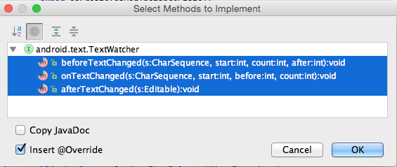

At this stage it is necessary to fully implement only afterTextChanged.
Here is the required implementation:
@Override
public void afterTextChanged(Editable editable)
{
residence.setGeolocation(editable.toString());
}
@Override
public void beforeTextChanged(CharSequence c, int start, int count, int after)
{
}
@Override
public void onTextChanged(CharSequence c, int start, int count, int after)
{
}These imports are required:
import android.text.Editable;
import android.text.TextWatcher;It is also necessary to register a Textwatcher: add this code at the end of onCreate:
// Register a TextWatcher in the EditText geolocation object
geolocation.addTextChangedListener(this);Test the code by placing breakpoints at:
- residence.setGeolocation in MyRentActivity.afterTextChanged.
- setGeolocation in Residence class.
Launch MyRent using the debugger. 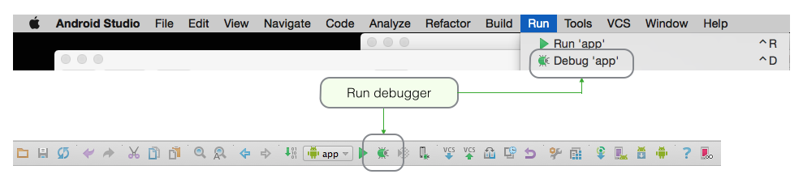
Begin to input a new geolocation in the input window in MyRent emulator.
- The program should halt at the first breakpoint and it should be possible to see the inputted digits in the Variables window as shown in Figure 6.
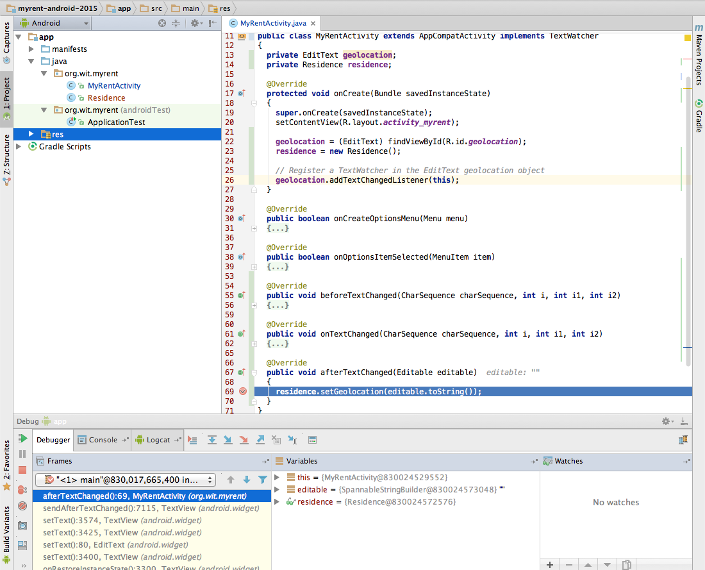
- Figure 7 contains a screenshot of the debugger toolbar with notes explaining the function of those most frequently used. 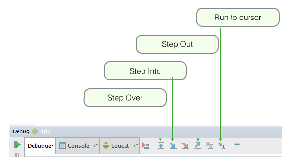
- Press Run to cursor to continue execution to the second breakpoint. Examine the values in Variable windows again: see Figure 8.

Let's examine the listener code in MyRentActivity in some detail.
Note that we have created an instance variable EditText geolocation.
The statement geolocation = (EditText) v.findViewById(R.id.geolocation); obtains a reference to the Geolocation input contol and assigns it to this instance variable.
- R.id.geolocation is the id referencing this control.
EditText is a subclass of TextView. TextView has a method addTextChangedListener. We invoke this method.
- The signature of addTextChangedListener is: public void addTextChangedListener (TextWatcher watcher).
- TextWatcher is an interface: it has 3 methods (that must be implemented on instantiation of a class implementing Textwatcher):
- onTextChanged
- beforeTextChanged
- afterTextChanged
- It's becoming clearer what we have done, namely:
- Obtained a reference to the UI Geolocation input control (geolocation)
- Invoked the method addTextChanged on geolocation
- As a parameter to addTextChangedListener, created an anonymous class that implemented the TextWatcher listener interface
- Fully implemented the method we're interested in: onTextChanged
- Implemented the remaining two methods as wrappers only.
- Recall that in using an interface all its methods must be implemented, otherwise a compile-time error is generated.

For reference, here is the latest MyRentActivity class:
package org.wit.myrent;
import android.support.v7.app.AppCompatActivity;
import android.os.Bundle;
import android.text.Editable;
import android.text.TextWatcher;
import android.view.Menu;
import android.view.MenuItem;
import android.widget.EditText;
public class MyRentActivity extends AppCompatActivity implements TextWatcher
{
private EditText geolocation;
private Residence residence;
@Override
protected void onCreate(Bundle savedInstanceState)
{
super.onCreate(savedInstanceState);
setContentView(R.layout.activity_myrent);
geolocation = (EditText) findViewById(R.id.geolocation);
residence = new Residence();
// Register a TextWatcher in the EditText geolocation object
geolocation.addTextChangedListener(this);
}
@Override
public void beforeTextChanged(CharSequence charSequence, int i, int i1, int i2)
{
}
@Override
public void onTextChanged(CharSequence charSequence, int i, int i1, int i2)
{
}
@Override
public void afterTextChanged(Editable editable)
{
residence.setGeolocation(editable.toString());
}
}Summary
Here is what we have done in this topic:
Created a model class, Residence.
- We will progressively extend this class as we develop MyRent.
- At the end of this topic, Residence includes:
- An id that will have a unique value for each instance of Residence.
- A String containing a geolocation in the form of latitude,longitude.
- For example: "52.45678,-7.54321"
- Five places of decimals provides accuracy not less than about +/- 1 metre.
- Getter and setter methods for geolocation.
Created a layout in xml
- Introduced an EditText input control to accept and display geolocation coordinates
Added a listener to the Activity class to capture any changes in input (the geolocation) and transmit these changes to the Residence object for storage.
The application at the end of this lab is available for reference here:
https://github.com/wit-ictskills-2016/myrent-00.git